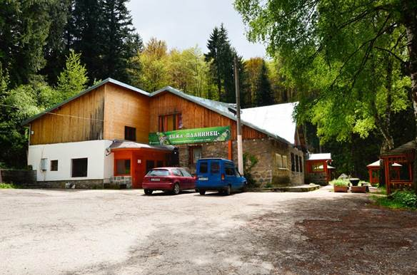
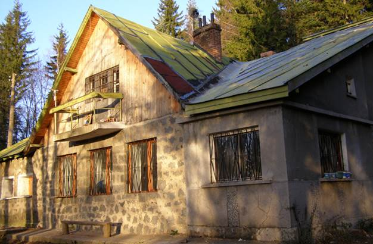

| До хижа "Планинец" се стига по пътя за Златните мостове. За целта трябва
да се придвижите до квартал "Бояна" (по Околовръстното шосе на София или по бул."България") и да продължите по пътя до разклона за
"Копитото". Отбивката за хижата е на около два километра след разклона. Може да се ориентирате и по табелите, разположени по пътя.
|
 |
|  | В момента хижата разполага с 62 легла като повечето от стаите са с две или три легла.Половината от стаите са със собствен санитарен възел.
Хижата има собствено локално парно.На първия етаж на хижата е разположена просторна механа в типично битов стил с над 60 места. Съседни обекти: Дендрариума - 45 мин; Боянския водопад - 1,30 часа
Изходни места: Златните мостове - 30 мин |